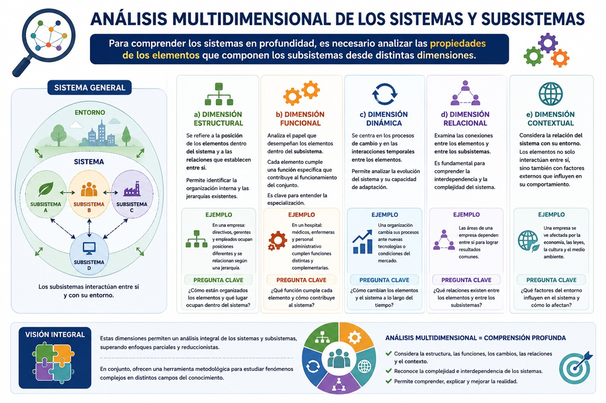

La noción de sistema en el pensamiento social surge en el contexto de la consolidación de la sociología como disciplina científica durante los siglos XIX y XX. Desde sus inicios, la sociología buscó comprender la sociedad no como una simple agregación de individuos, sino como un conjunto estructurado de relaciones. En este sentido, pensadores como Auguste Comte y Herbert Spencer introdujeron analogías organicistas para explicar el funcionamiento social, comparando la sociedad con un organismo compuesto por partes interdependientes.
Posteriormente, Émile Durkheim profundizó esta visión al considerar los hechos sociales como realidades objetivas que cumplen funciones dentro de un todo social. Esta perspectiva sentó las bases para el desarrollo del funcionalismo estructural en el siglo XX, particularmente con la obra de Talcott Parsons, quien formalizó la noción de sistema social como un conjunto de interacciones reguladas por normas y valores compartidos.
De manera paralela, el desarrollo de la Teoría General de Sistemas, impulsada por Ludwig von Bertalanffy, aportó un marco conceptual que trascendió las ciencias naturales para influir en las ciencias sociales. Esta teoría permitió comprender los sistemas como totalidades organizadas, abiertas y dinámicas, lo que enriqueció el análisis sociológico al introducir conceptos como interdependencia, equilibrio y retroalimentación.
En la segunda mitad del siglo XX, autores como Niklas Luhmann reformularon la teoría de sistemas sociales desde una perspectiva más compleja, incorporando la comunicación como elemento central y destacando la autonomía de los subsistemas funcionales. A su vez, desde la epistemología surgió la perspectiva sistémica de Mario Bunge para superar las perspectivas sistémicas individualistas u holistas. Así, la noción de sistema se convirtió en un eje fundamental para comprender la diferenciación y la complejidad de las sociedades contemporáneas.
El surgimiento de la Teoría General de Sistemas y su contexto histórico.
La Teoría General de Sistemas (TGS) constituye uno de los desarrollos conceptuales más influyentes del siglo XX, al proponer una nueva forma de comprender la realidad basada en la interrelación, la organización y la complejidad. Su surgimiento no puede entenderse de manera aislada, sino como resultado de profundas transformaciones científicas, filosóficas y sociales que cuestionaron los límites del paradigma mecanicista y reduccionista de la modernidad. En este sentido, la TGS representa un cambio de perspectiva que permite abordar fenómenos complejos desde una visión integradora y transdisciplinaria.
La formulación sistemática de la TGS se atribuye principalmente a Ludwig von Bertalanffy, quien a partir de la década de 1930 desarrolló una teoría orientada a superar el reduccionismo en biología. Bertalanffy propuso que los organismos debían entenderse como sistemas abiertos, es decir, entidades que intercambian materia, energía e información con su entorno.
El concepto de sistema abierto fue fundamental para la TGS, ya que permitió explicar cómo los sistemas mantienen su organización a pesar del cambio constante de sus componentes. Esta idea rompía con la noción de equilibrio estático y proponía en su lugar un equilibrio dinámico, basado en procesos de autorregulación y adaptación.
Bertalanffy planteó que los principios de organización de los sistemas podían aplicarse a diferentes niveles de la realidad, desde los sistemas físicos y biológicos hasta los sociales. De este modo, la TGS se presentó como una teoría transdisciplinaria, capaz de establecer analogías y modelos comunes entre distintas áreas del conocimiento.
- Bertalanffy, Ludwin Von (1986). Teoría general de los sistemas. México: Fondo de Cultura Económica.
Te recomendamos ver estos videos para profundizar sobre este tema:
Conceptos básicos, características y propiedades de los sistemas y subsistemas.
El concepto de sistema constituye el eje central de la teoría de Bertalanffy. Un sistema puede definirse como un conjunto de elementos en interacción, organizados de tal manera que conforman una totalidad con propiedades propias. Esta definición implica que un sistema no es simplemente una suma de partes, sino una organización estructurada donde las relaciones generan nuevas cualidades.
Una de las nociones fundamentales es que todo sistema posee límites, los cuales lo diferencian de su entorno, aunque no lo aíslan completamente. En este sentido, Bertalanffy introduce la distinción entre sistemas cerrados y sistemas abiertos. Los primeros no intercambian materia ni energía con el entorno, mientras que los segundos -más representativos de los fenómenos biológicos y sociales- mantienen un flujo constante con su medio.
El concepto de subsistema se refiere a unidades internas del sistema que poseen cierta autonomía relativa, pero que dependen del sistema mayor para su funcionamiento. Cada subsistema cumple funciones específicas y se encuentra en interacción con otros subsistemas, formando una red compleja de relaciones. Esta estructura jerárquica implica que los sistemas están organizados en niveles, donde cada nivel puede ser analizado como sistema en sí mismo.
Entre las características esenciales de los sistemas, destaca su organización, entendida como el conjunto de relaciones que estructuran a los elementos. La organización determina el comportamiento del sistema y su capacidad de adaptación.
Otra característica clave es la totalidad. El sistema debe ser comprendido como un todo integrado, ya que las propiedades emergentes no pueden explicarse únicamente a partir de sus componentes. Este principio rompe con el reduccionismo y subraya la importancia de las interacciones.
Asimismo, los sistemas presentan interdependencia entre sus elementos. Ningún componente puede entenderse de manera aislada, ya que su función depende de su relación con los demás. Esta interdependencia genera dinámicas complejas que pueden dar lugar a cambios estructurales.
La dinamicidad es otra característica central. Los sistemas no son estáticos, sino que se encuentran en constante transformación. En el caso de los sistemas abiertos, esta dinámica se relaciona con el intercambio de energía, materia e información con el entorno.
Finalmente, los sistemas poseen finalidad o teleología aparente, en el sentido de que tienden a mantener su organización y a alcanzar ciertos estados de equilibrio. Este equilibrio, sin embargo, no es estático, sino dinámico, lo que Bertalanffy denomina estado estacionario.
Como puedes ver en el diagrama las propiedades de los sistemas derivan de su organización y de las relaciones entre sus elementos. Esas propiedades son:
La emergencia, que refiere a la aparición de propiedades nuevas que no están presentes en las partes individuales. Por ejemplo, la vida es una propiedad emergente de la organización de moléculas.
La equifinalidad, que implica que un sistema puede alcanzar el mismo estado final a partir de diferentes condiciones iniciales. Este principio es especialmente relevante en sistemas abiertos, donde la interacción con el entorno introduce múltiples trayectorias posibles.
La homeostasis, propiedad, relacionada con la capacidad del sistema para mantener su estabilidad interna frente a perturbaciones externas. Esta estabilidad se logra mediante mecanismos de autorregulación, que implican procesos de retroalimentación.
La jerarquía, lo que significa que están compuestos por niveles organizados. Cada nivel posee propiedades específicas, pero también está integrado en un nivel superior.
La adaptabilidad permite a los sistemas responder a cambios en el entorno, modificando su estructura o funcionamiento para mantener su organización.
- Bertalanffy, Ludwin Von (1986). Teoría general de los sistemas. México: Fondo de Cultura Económica
Te recomendamos ver estos videos para profundizar sobre este tema:
Dimensiones de análisis de las propiedades de los elementos de los subsistemas.
Los subsistemas cumplen un papel fundamental en la estructura de los sistemas. Cada subsistema está especializado en ciertas funciones, lo que contribuye a la eficiencia del sistema global. Sin embargo, esta especialización no implica aislamiento, ya que los subsistemas están interconectados.
La relación entre subsistemas se caracteriza por la coordinación y la interdependencia. Un cambio en un subsistema puede generar efectos en otros, lo que evidencia la naturaleza relacional del sistema. Esta dinámica puede entenderse en términos de retroalimentación, donde las acciones de un subsistema influyen en el comportamiento del sistema en su conjunto.
Además, los subsistemas pueden presentar conflictos o tensiones, especialmente en sistemas complejos como los sociales. Estas tensiones forman parte de la dinámica del sistema y pueden dar lugar a procesos de transformación.
Para comprender los sistemas en profundidad, es necesario analizar las propiedades de los elementos que componen los subsistemas. Este análisis puede abordarse desde distintas dimensiones como puedes ver en el diagrama:
a) Dimensión estructural: Se refiere a la posición de los elementos dentro del sistema y a las relaciones que establecen entre sí. Esta dimensión permite identificar la organización interna y las jerarquías existentes.
b) Dimensión funcional: Analiza el papel que desempeñan los elementos dentro del subsistema. Cada elemento cumple una función específica que contribuye al funcionamiento del conjunto. Esta dimensión es clave para entender la especialización de los subsistemas.
c) Dimensión dinámica: Se centra en los procesos de cambio y en las interacciones temporales entre los elementos. Esta dimensión permite analizar la evolución del sistema y su capacidad de adaptación.
d) Dimensión relacional: Examina las conexiones entre los elementos y entre los subsistemas. Esta dimensión es fundamental para comprender la interdependencia y la complejidad del sistema.
e) Dimensión contextual: Considera la relación del sistema con su entorno. Los elementos no solo interactúan entre sí, sino también con factores externos que influyen en su comportamiento.
Como puedes ver en el siguiente diagrama, estas dimensiones permiten un análisis integral de los sistemas y subsistemas, superando enfoques parciales y reduccionistas. En conjunto, ofrecen una herramienta metodológica para estudiar fenómenos complejos en distintos campos del conocimiento.

- Bertalanffy, Ludwin Von (1986). Teoría general de los sistemas. México: Fondo de Cultura Económica.
Te recomendamos ver este video para profundizar sobre este tema: